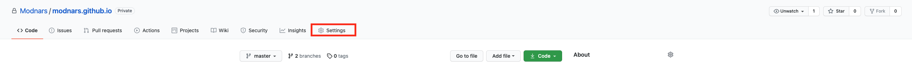
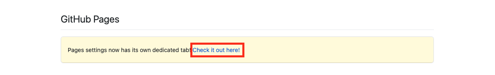
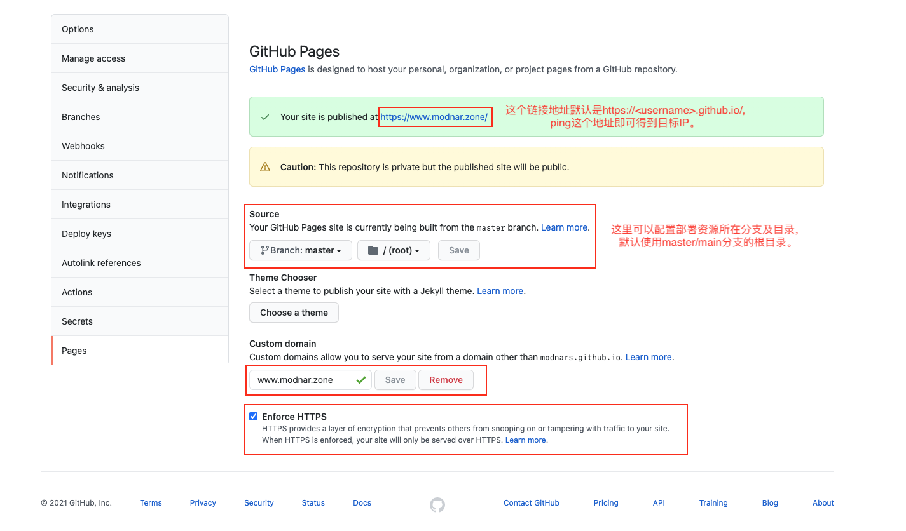
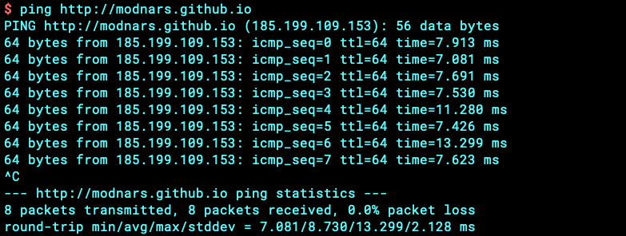
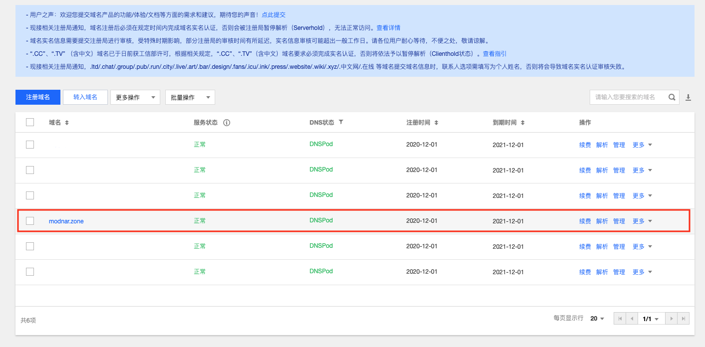
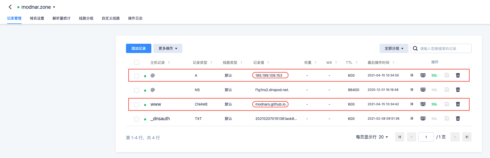

问题描述
在起初用 GitHub Pages 搭建博客页面之后，使用 GitHub 的学生优惠申请了免费的域名。在域名过期之后，又重新在 腾讯云 申请注册了新的域名。这里提供一种切换 GitHub Pages 域名的方案。
简要说明
这里假定已经完成了域名的申请、认证等工作，名下已经拥有正常可解析的域名。
下面的域名说明均是使用腾讯云提供的相关域名服务，腾讯云对域名的解析，目前是采用 DnsPod 来做的。
解决方案
首先，打开 GitHub Pages 的资源仓库的 Setting 页面。



然后，可以看到 Your site is published at http://<username>.github.io 这一行说明(上面截图中这里的文字说明有些问题)，就是说在未绑定到新域名时，你可以通过这个链接地址来访问自己的 GitHub Pages 。这时，就需要获取一下它的 IP地址 。在本地使用 ping 来得到它的IP:
1 | $ ping https://<username>.github.io/ |

拿到IP之后，就可以通过将这个值绑定到注册的域名上。 登录腾讯云，查看自己名下的域名是否解析正常。然后点击需要绑定的域名条目的 解析 入口。
按照下图正确填写相关内容，其中用红框标识的是需要注意的部分。


此处需要注意的是，在 hexo 的 source 目录下的 CNAME 文件中的域名也要同步修改为新的域名: www.domain。
然后，在 GitHub Pages 的 Setting 处填写 Custom Domain 并点击保存，为了保证更安全的访问方式，你也可以勾选 Enforce HTTPS 。
在执行完上述流程之后，就可以使用自己申请的域名访问 GitHub Pages 了，在配置过程中，切换解析值可能需要一些时间，在确认配置等内容无误之后等待一会儿就好，一般10分钟之内即可生效。
你可以将自己的资源仓库的可见性设置为 Private ，这样除了你自己，其他人就无法看到资源的历史变更记录了。方便你修改、删除一些历史文章。